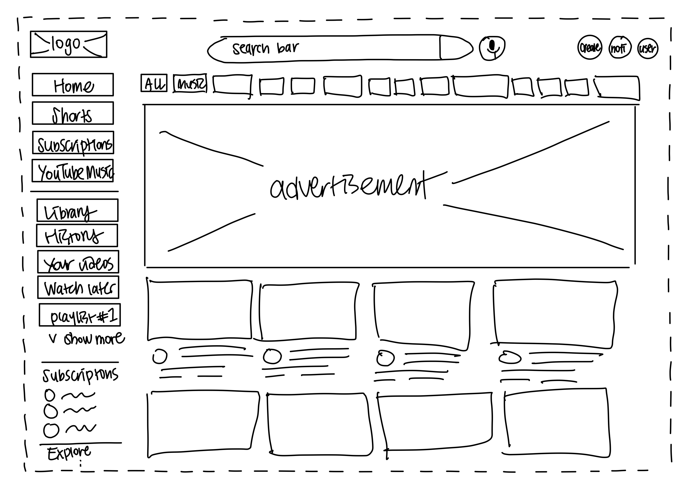

-
Using the favorite website you chose in homework 1, create a wireframe for one page of it using pen/paper, PowerPoint, or any your tool of choice. (use the 'img' tag!) Make sure to let us know what the name of your website is (Use the 'p' tag!)

-
Try to improve the website you've chosen, and create a redesigned wireframe of one page for the same website using the principles of visual hierarchy that you learned from the article.

-
What is the goal of the website? Who is it intended for? How does the design accomplish this? Write 2-3 sentences answering these questions. (Use the 'p' tag again!)
YouTube aims to be a central hub for video content, where individuals can post, watch, evaluate, and discuss videos. It is intended for a broad audience, encompassing content creators, advertisers, and viewers from diverse backgrounds and interests. The website's layout, which is characterized by its user-friendly interface, search engine optimization tools, and personalized recommendation algorithms, makes it simple to access and encourages content engagement, serving as a universal platform for both watching and making videos.
-
Write 2-3 sentences about what problems your redesign addressed, and how it solved them.
The redesign tackled the problem of overlapping content that resulted in compact spacing. Notably, the redundancy of having categories beneath "Library" was evident since these could be directly accessed within the "Library" page. In response, overlapping items were removed and the space between buttons was enhanced. As a practical change, the "Library" option was excised from the sidebar.
NOTE: Make sure to include the wireframe images in the website and don't just put it in your assets folder!
Your wireframes should look something like this: